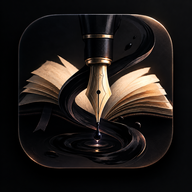

Чернильница
Личный писательский блокнот.
Пиши книги с ощущением настоящей бумаги.
- 📖Библиотека своих произведений, любой жанр
- 🪶Страницы, перелистывание и автосохранение
- ✒️Помощник проверяет орфографию и пунктуацию

Личный писательский блокнот.
Пиши книги с ощущением настоящей бумаги.